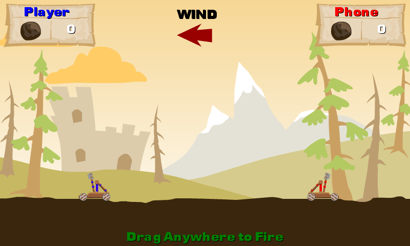

Catapult Wars
Ported from Microsoft's Windows Phone/Reach Catapult Wars training kit for XNA 4.0, final Polish and Menus stage.
Source for this sample on GitHub ↗

Play ▸Opens in a new tab. The first load prepares the browser for the game's background loading thread.
About this sample
Launch boulders at the other catapult in a turn-based duel. The game includes wind, animated catapults, a phone opponent, sound effects, instructions and a pause menu.
Controls
| Action | Control |
|---|---|
| Start and continue | Tap or click Play and the instructions screen |
| Aim and fire | Drag on the game field and release |
| Pause | Escape; choose Return or Quit Game in the pause menu |